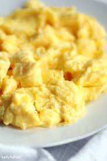

Soft Boiled Egg

Description
This can be served as a side dish or an appitizer.
For this recipe, you will need:
Ingredients:
- Egg(As much as you need)
- Oil
- Salt
- Pepper
- Butter
- Parsley
Steps:
- Heat you pan.
- Add oil./li>
- When the oil starts smoking, add the egg.
- Add salt and butter and mix them
- Remove from the pan.
- Garnish with pepper and parsley.